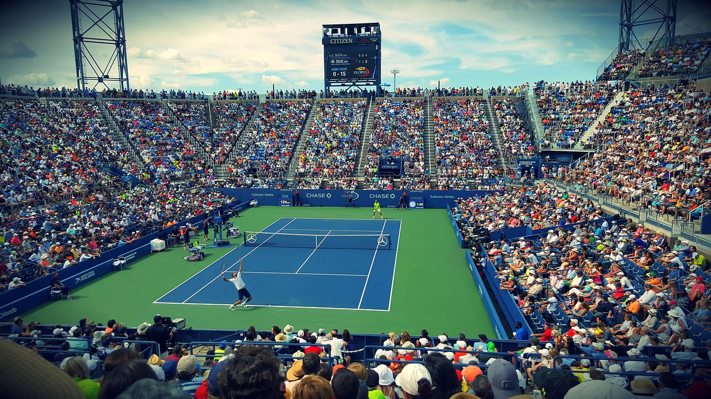
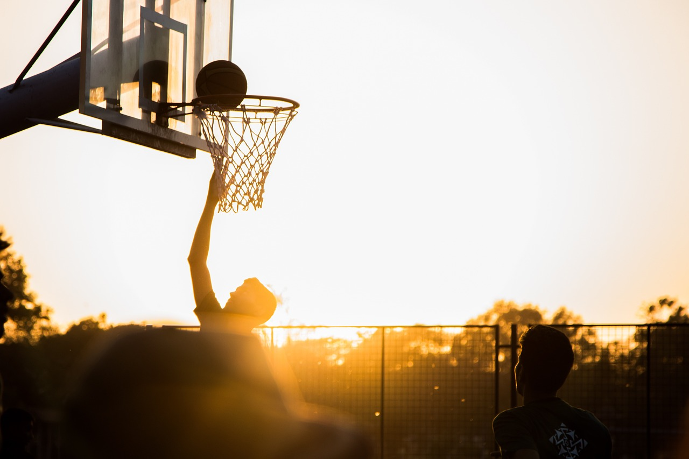

El tenis es un deporte jugado en todo el mundo muy sencillo en el que se juega en una pista rectangular muy grande con dos raquetas y pelotas de tenis.Varios de los tenistas mas famosos en España son Carlos Alcaraz y Rafael Nadal.A mi es un deporte que me gusta mucho ya que es muy sencillo y divertido de jugar con amigos
El ping pong es un deporte muy parecido al tenis ya que se utiliza una pala (bastante mas chica y fina) y se utiliza una mesa de ping pong.Es mucho mas aburrido que el tenis para mi porque al jugar en una mesa de ping pong son mas rapidas las partidas.

El baloncesto es un deporte al que para mi es un poco aburrido se juega en equipo o practicado en solitario.Es un deporte muy sencillo ya que se juega con un equipo y con un balon.El objetivo es encestar la pelota en una canasta el maximo numero de veces posible.
Para volver pinchar aqui.